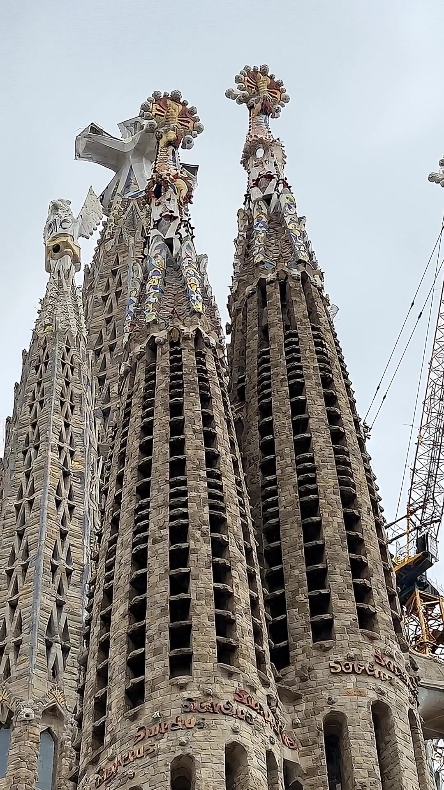

¿Y si tus viajesempiezan a sonar así?
Y tú eliges quiénte la cuenta.

Kore
Puck
Charon
Esta fachada representa la agonía, crucifixión y muerte de Jesús.
Las columnas inclinadas recuerdan a huesos o troncos secos.
Suma los números del cuadrado mágico: siempre da 33, la edad de Cristo.
1Te la cuenta.
2Con su dato curioso.
3Y le preguntas lo que quieras.
Llega en octubre.
Tu primer viaje por 1,99 €*
*Si te apuntas a la lista de espera en travelsnomad.com
travelsnomad.com